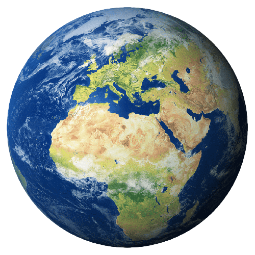

Página inicial de Juan Tuesta

Bienvenido a mi página personal. Soy un alumno de la Universidad de Deusto y esta es mi página inicial, con la lista de mis enlaces favoritos y otra información de interés.
Enlaces favoritos:
- Páginas Personales
- Páginas de referencia
- Portales
- Publicaciones
Páginas personales:
- Documentalistas
- Historiadores
- Lingüistas
- Traductores
Páginas de referencia
- Bibliotecas universitarias
- Centros de documentación
- Museos de arte contemporáneo
- Medios de comunicación